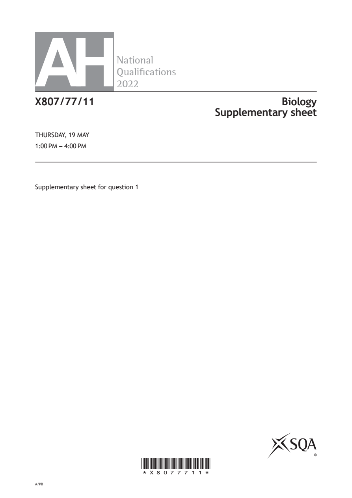
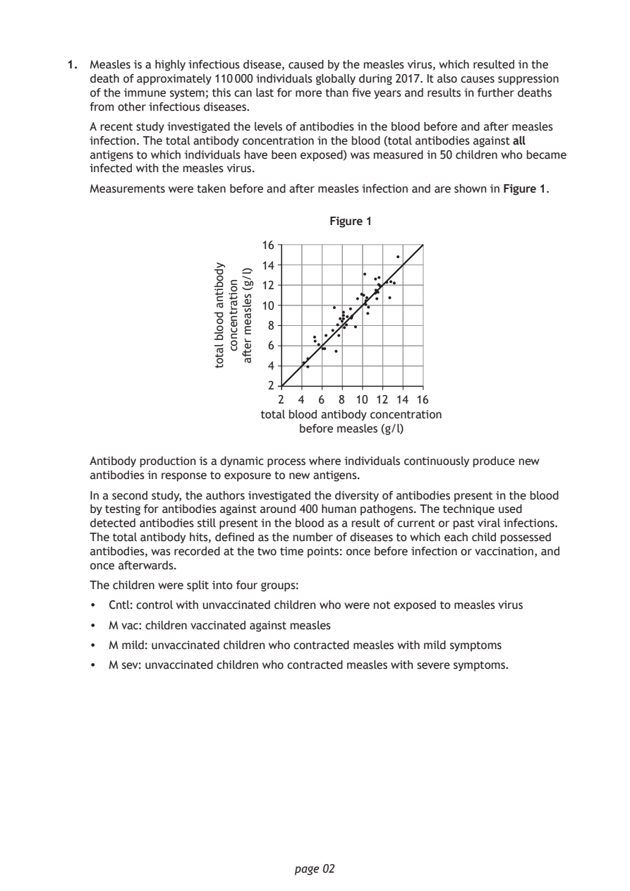
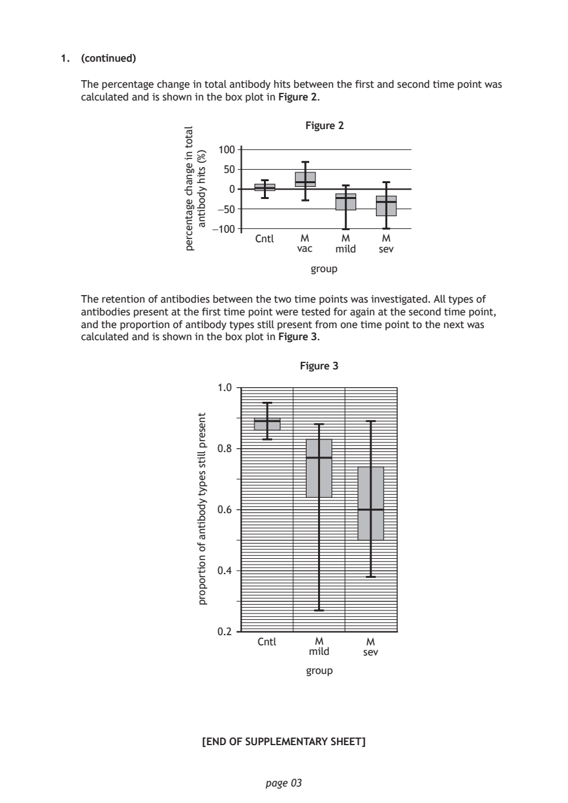
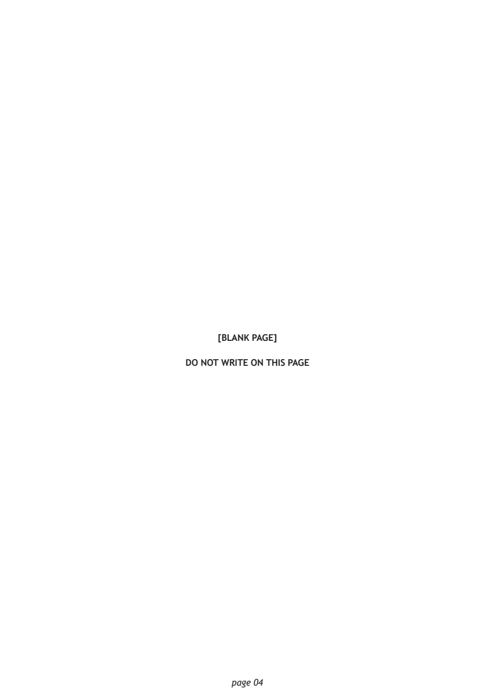

Source: SQA / Qualifications Scotland. This is a StemInteract HTML companion, not an official HTML edition. Use the original images for figures, graphs and table layout.
PDF page 1

Selectable page text
AH
National
Qualications
2022
X807/77/11 Biology
Supplementary sheet
THURSDAY, 19 MAY
1:00 PM – 4:00 PM
Supplementary sheet for question 1
©
*X8077711*
A/PBPDF page 2

Selectable page text
1. Measles is a highly infectious disease, caused by the measles virus, which resulted in the
death of approximately 110 000 individuals globally during 2017. It also causes suppression
of the immune system; this can last for more than five years and results in further deaths
from other infectious diseases.
A recent study investigated the levels of antibodies in the blood before and after measles
infection. The total antibody concentration in the blood (total antibodies against all
antigens to which individuals have been exposed) was measured in 50 children who became
infected with the measles virus.
Measurements were taken before and after measles infection and are shown in Figure 1.
Figure 1
page 02
ydobitna
doolb
latot
noitartnecnoc
)l/g(
selsaem
retfa
16
14
12
10
8
6
4
2
2 4 6 8 10 12 14 16
total blood antibody concentration
before measles (g/l)
Antibody production is a dynamic process where individuals continuously produce new
antibodies in response to exposure to new antigens.
In a second study, the authors investigated the diversity of antibodies present in the blood
by testing for antibodies against around 400 human pathogens. The technique used
detected antibodies still present in the blood as a result of current or past viral infections.
The total antibody hits, defined as the number of diseases to which each child possessed
antibodies, was recorded at the two time points: once before infection or vaccination, and
once afterwards.
The children were split into four groups:
• Cntl: control with unvaccinated children who were not exposed to measles virus
• M vac: children vaccinated against measles
• M mild: unvaccinated children who contracted measles with mild symptoms
• M sev: unvaccinated children who contracted measles with severe symptoms.PDF page 3

Selectable page text
1. (continued)
The percentage change in total antibody hits between the first and second time point was
calculated and is shown in the box plot in Figure 2.
Figure 2
page 03
latot
ni
egnahc
egatnecrep
)%(
stih
ydobitna
100
50
0
−50
−100
Cntl M M M
vac mild sev
group
The retention of antibodies between the two time points was investigated. All types of
antibodies present at the first time point were tested for again at the second time point,
and the proportion of antibody types still present from one time point to the next was
calculated and is shown in the box plot in Figure 3.
Figure 3
tneserp
llits
sepyt
ydobitna
fo
noitroporp
1.0
0.8
0.6
0.4
0.2
Cntl M M
mild sev
group
[END OF SUPPLEMENTARY SHEET]PDF page 4

Selectable page text
[BLANK PAGE]
DO NOT WRITE ON THIS PAGE
page 04